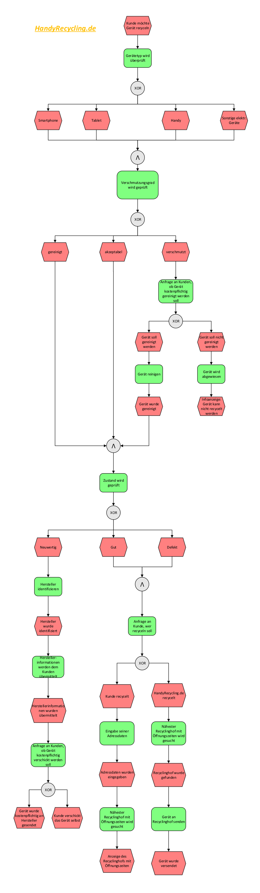
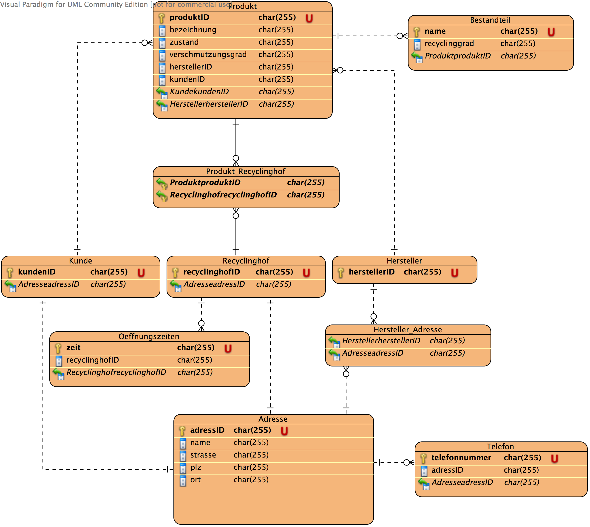
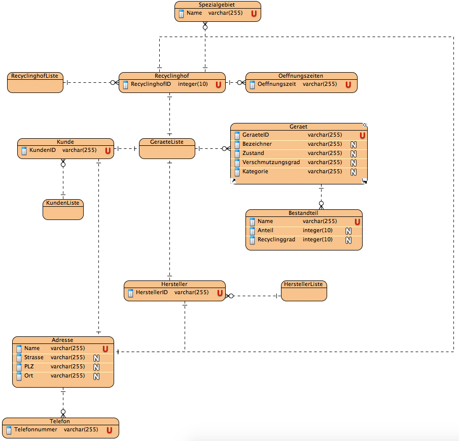
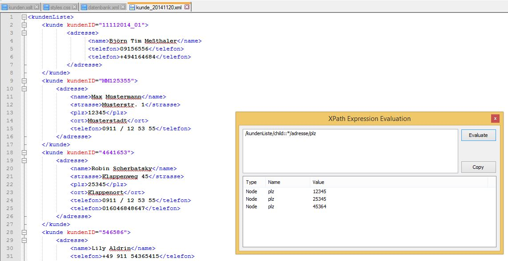
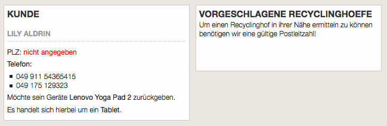
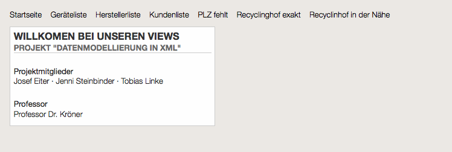
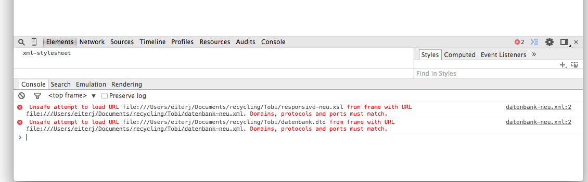

Projektdokumentation zum Thema Smartphone-Recycling
Datenmodellierung mit XML
This version:
-
Latest version:
-
Previous versions:
-
Editors:
Jennifer Steinbinder, 2262360
Tobias Linke, 2432648
Josef Eiter, 2318404
Nürnberg, 16. Januar 2015
Abstract
Diese Dokumentation handelt sich um die Projektarbeit für das Fach Datenmodellierung mit XML. Das Projekt realisiert eine technische Umsetzung einer Smartphone-Recycling Anwendung mit XML und XSLT.
Die Zuweisung der Projekte führte dazu, dass Josef Eiter, Tobias Linke und Jennifer Steinbinder das Thema "Recycling" zu bearbeiten hatten. Da aktuelle Diskussionen rund um das unnötige Aufbewahren alter Handys geführt werden, hat sich das Projekteam genau auf diese Situation spezialisiert. Das Handyrecycling wird mit Hilfe der Datenmodellierung mit XML zu einem ausführlichen Informationssystem abgebildet. Ziel ist es, einen Überblick über die Datensicht des Informationssystems "Handyrecycling" zu verschaffen.
Das Projektteam ist wie folgt strukturiert vorgegangen. Die Phasen der Datenmodellierung wurden gemeinsam erarbeitet. Mit Hilfe eines Geschäftsprozessmodells wurde ein konzeptuelles Schema entworfen. Das konzeptuelle Schema wurde in die logische bzw. relationale Strukturen des Modellierungswerkzeugs überführt. Analog zu den relationalen Strukturen wurden die dazugehörigen XML-Dokumente erstellt. Parallel wurde die Document Type Definition zu jeder XML-Datei deklariert. Anschließend wurde der Umgang mit XPath-Ausdrücke sich angeeignet. Durch das nun verschaffte Know-How der XML Path Language und der Sprache XSLT Views erzeugt.
2 Geschäftsprozessmodell
Zur Darstellung des Vorgehens bei unserer Onlineanwendung "Handyrecycling.de" wurde ein EPK-Modell (siehe Abbildung 1) modelliert. Es beschreibt den Prozess des Handyrecycling-Projekts.
Gedanke:
Der Kunde möchte sein Gerät recycling. Zuerst wird ihm eine Auswahl des Gerätetyps angezeigt: Smartphone, Tablet, Handy oder sonstige elektrische Geräte. Folglich muss er den Verschmutzungsgrad angeben. Dazu kann der Kunde unter folgenden Zuständen auswählen: gereinigt, akzeptabel und verschmutzt. Falls das Gerät verschmutzt ist, wird ihm eine kostenpflichtige Säuberung angeboten. Wird diese verneint, wird ihm in einer Anzeige mitgeteilt, dass sein Gerät leider nicht recycelt werden kann. Bei einem gesäuberten Gerät kann nun unser Recyclingprozess weitergeführt werden. Nun wird der Zustand des Geräts geprüft. Bei einem neuwertigen Gerät wird daraufhin der Hersteller des Geräts identifiziert. Angrenzend entscheidet der Kunde, ob er sein Gerät selbst an den Hersteller verschickt oder Handyrecycling.de kostenpflichtíg das Gerät an den Hersteller versendet. Ist jedoch das Gerät stark gebraucht, entscheidet der Kunde, ob er unseren Service, dass das Gerät von uns aus zum Recyclinghof versendet wird, in Anspruch nimmt oder er selber das Gerät recyclen möchte. Entscheidet er sich für das Letztere wird ihm mit Hilfe seiner Adressdaten der näheste Recyclinghof angezeigt.

Abbildung 1: EPK Modell Geschäftsprozess
3 Datenmodell
Während der Entwicklung unseres Projekts wurde das Startdatenmodell aufgrund von Unstimmigkeiten und Unklarheiten erweitert und verändert.
3.1 Initiales Datenmodell
Der erste Entwurf (siehe Abbildung 2) hatte ein konkretes Produkt fokussiert, das von einem Kunden zurückgegeben wird. Nach den ersten Tests und Abbildung unserer Anwendungsfälle wurde jedoch klar, dass dieses Datenmodell nicht genau das leistet war unsere Applikation benötigt. Zudem hatte dieses Modell die Schwachstelle, dass die Geräte immer eindeutig pro Kunde vorhanden sind d. h. es gibt keine Bibliothek von Geräten, die zum Beispiel als Auswahl für die Neuerfassung von Kunden genutzt werden kann.
Das Datenmodell wurde komplett überarbeitet und es wurde mit einigen Elementen erweitert (siehe Abschnitt 3.2 Neues Datenmodell).

Abbildung 2: Initiales Datenmodell
3.2 Neues Datenmodell
Da unser initiales Datenmodell einige Schwachstellen hatte und nicht genau unseren Anwendungsfällen entsprach musste dieses nochmal überarbeitet werden. Es wurden einige Element hinzugefügt. Irrelevante Informationen wurden weggelassen umd das Datenmodell so schlank wie möglich zu halten.
Das Datemodell in Abbildung 3 enthält nun Elemente die unsere Geräte, Hersteller, Kunden und Recyclinghöfe als Liste speichern. Durch diese kleine aber wichtige Änderung können in unserer Anwednungen alle zum Beispiel alle Geräte oder Kunden ausgegeben werden.
Weitere Anpassungen wie zum Beispiel das hinzufügen des Elements Spezialgebiet, das die Spezialisierung eines Recyclinghofs angiebt, ist es nun möglich passend auf das Gerät des Kunden zu filtern und einen passenden Recyclinghof zu finden.
Das Erweitern des Elements Bestandteile um die Attribute Anteil und Recyclinggrad ermöglicht es zu einem bestimmten Gerät die Zusammensetzung von Bestandteile anzugeben. Der Recyclinggrad gibt an zu wie viel Prozent das jeweilige Bestandteil recyclebar ist.

Abbildung 3: Neues Datenmodell
4 Richtlininen zur Gestaltung der XML Dateien
Da gemeinsam an einem Projekt gearbeitet wird, macht es durchaus Sinn gewisse Konventionen für die Gestaltung des XML Codes und allgemeine Regeln festzulegen. Diese Regeln sollten auch bei Änderungen oder Erweiterungen eingehalten werden um die Konsistenz der Datenstruktur zu gewährleisten.
4.1 Elemente und Attribute
Die allgemeine Zeichenkodierung wurde über alle XML-Files hinweg wie folgt festgelegt:
<?xml version="1.0" encoding="ISO-8859-1"?>
Da unsere Anwendung nur in Deutschland verwendet werden soll und die Inhalte auf Deutsch sind, sollen die Elementnamen und Attribute auf Deutsch sein. Elementnamen und Attribute sind in der Regel klein zu schreiben.Bei allen XML-Dokumenten wurde ein genaues Wurzelelement ausgewählt. Das Informationssystem hat immmer die Wurzel "datenbank", in der alle vier Listen eingepflegt werden: geraeteListe, herstellerListe, kundenListe und recyclinghofListe. An diesem Beispiel werden zum Einen die Vorgabe, dass das Element mit einem kleinen Buchstaben beginnt und zum Anderen auf Deutsch gehalten wird, eingehalten. Jedes darauffolgende Wort in demselben Element beginnt mit einem großen Buchstaben: geraeteListe.
Es wurden hier also folgende Regeln beachtet:
Namen dürfen Buchstaben, Ziffern und andere Zeichen enthalten
Namen dürfen Groß- und Kleinschreibung beinhalten
Namen sollten ausdrucksstark und kurz sein
Um den Inhalt mancher Elemente zu beschreiben wurden einerseits PCDATA und andererseits CDATA verwendet. Als Beispiel wird die herstellerListe betrachtet. Parsed Character Data (PCDATA) wurde bei Elementen angewendet, die einen unstrukturierten Inhalt haben. PCDATA sind Dokumentenabschnitte, die der XML-Parser gemäß den XML-Syntax-Regeln verarbeitet. Ein Beispiel für einen Inhalt des Elements "oeffnungszeiten" ist:
Unparsed Character Data (CDATA) wurde in Attributen verwendet. Der Term CDATA markiert Texte, die ein XML-Parser nicht verarbeiten soll. Ein Beispiel eines Attributs, das mit CDATA deklariert worden ist, ist das Attribut recyclinghof:
Hier ist der Inhalt der recyclinghofID von der Verarbeitung des XML-Pasers ausgeschlossen. Attribute beschreiben ein Element. Das Element "recyclinghof" wird hier also mit dem Attributnamen "recyclinghofID" und dem Attributwert "HofMitte"" beschrieben. Ein Element kann auch beliebig viele Attribute tragen, somit ist die Entscheidung ziemlich schnell getroffen worden, dass beispielsweise das Element "geraet"" mehrere Attribute hat, da ein Gerät mehrere Eigenschaften hat:
Das Gerätebeispiel hat also eine genaue ID, eine Bezeichnung, einen Zustand, einen Verschmutzungsgrad sowie eine dazugehörige Gerätekategorie. Die Richtlinie, dass Attribute unterschiedliche Namen tragen müssen, wurde strengst beachtet. Die Reihenfolge zwischen den einzelnen Eigenschaften sind in einem Attribut völlig gleichgültig.
Durch das zusätzliche Einfügen von Elementen und Attributen können XML Dokumente leicht erweitert werden. Die Erweiterbarkeit von XML kann Missverständnisse in der Kommunikation unter den Projektmitgliedern auslösen, deswegen einigten sich die Teammitglieder darauf, dass falls ein Name eines Attributs oder Elements schon einmal vergeben worden ist, dieser nun reserviert ist und keinesfalls für eine andere Bedeutung verwendet werden durfte.
Es wurden also folgende Punkte des Well-formed XML eingehalten:
Jedes Anfangs-Tag muss ein zugehöriges Ende-Tag haben
XML beachtet grundsätzlich Groß- und Kleinschreibung
XML belässt Whitespace im Text
Ein Element darf niemals zwei Attribute mit dem selben Namen beinhalten
4.2 Kommentare
Da Kommentare nicht innerhalb von XML-Tags verwendet werden dürfen, werden diese nach Möglichkeit über den betreffenden XML-Tag verfasst. Die Klammerung der Kommentare erfolgte durch standardgemäßter Form: <!--Kommentar-->. Außerdem wurde vorallem die Angabe befolgt, dass "--" Zeichen in keinem Kommentar verwendet wurden. Im Allgemeinen sollten die Kommentare beschreibend und aussagekräftig sein. Fehlgeschlagene Versuche wurden in den XML Dokumenten beibehalten aber mit Hilfe der Kommentarfunktion auskommentiert, damit sie keinen Einfluss auf die Validierung des XML Dokuments hat. Um die Document Type Definition zu beschreiben wurde auch innerhalb der DTD einige Kommentare erfasst.
5 Document Type Definition (DTD)
Document Type Definitions (DTDs) werden in einem seperaten Dokument ausgelagert um die Dateigröße der einzelnen XML-Dokumenten möglichst gering zu halten. Die DTD-Datei(en) werden in das XML Dokument ganz eingebunden. Eine Menge formal überprüfbarer Regeln zur Beschreibung der gemeinsamen strukturellen Merkmale einer Menge von Dokumenten ist ein Dokumententyp. Dementsprechend ist eine DTD eine Grammatik. Das Validieren der Document Typ Definition und der zugehörigen XML Dokumente erfolgte durch das Online-Tool von W3C http://validator.w3.org. Da mit verschiedenen Editoren wie Notepad++ und TextEdit gearbeitet worden ist, wurde entschlossen, dass nach jeder Änderung des Files mit dem W3C Validator validiert wird. Die DTD wurde extern lokal im System deklariert:
<!DOCTYPE datenbank SYSTEM "datenbank.dtd">
Elemente werden in der DTD wie folgt definiert:
XML
DTD
<geraet>
<!ELEMENT geraet>
Die Reihenfolge von Elementen in einem Dokument ist in der DTD fest deklariert:
Diese Ausdrücke über das Element "adresse"" zeigt folgendes: Jede Adresse hat mindestens einen Namen. Die Straße, Postleitzahl sowie der Ort sind optional anzugeben. Jedoch muss mindestens eine Telefonnummer des Kundens angegeben werden. Der Kunde sollte bei Rückfragen oder Notfällen unter einer Telefonnummer erreichbar sein.
Ein Attribut wurde in der DTD wie folgt deklariert:
Die Grammatik für das Element Gerät beschreibt hier, welche Attribute und Attributwerte in einem XML-Dokument für das Element "geraet" vorkommen dürfen. Die Attribute geraetID, geraetBezeichnung, zustand, verschmutzungsgrad, geraetekategorie und hersteller wurden außerhalb des betroffenen Elements durch "!ATTLIST" deklariert.
Hier haben wir mehrere Attribute, die durch NMTOKEN beschrieben worden sind. Das heißt es sind bei einem NMTOKEN Namen führende Ziffern und Satzzeichen am Anfang des Namens erlaubt. Der Default-Wert #REQUIRED besagt, dass das XML-Dokument an dieser Stelle einen Wert spezifizieren muss.
In der XML-Datei selbst werden die Kindelemente des übergeordneten Elements um einen Tab eingerückt, um die Lesbarkeit der XML-Dokumente zu erhöhen.
Bei der Vergabe von IDs wird der Datentyp NMTOKEN verwendet.
Im Rahmen dieses Projekts wurden keine Entities (Abkürzungen für Zeichenfolgen) verwendet.
5.1 Gerät
Für unseren Anwendungsfall müssen zu den Geräten verschiedene Informationen gespeichert werden.
Ist ein Container für alle Geräte die in unserer Datenbank vorhanden sind. Mit diesem Container ist es möglich eine Liste der Geräte auszugeben.
geraet
Beschreibt ein bestimmtes Gerät. Es beinhaltet alle relevanten Information zu diesem Gerät.
Attribute geraet:
Attribut
Beschreibung
geraeteListeID
Diese Nummer identifiziert genau eine Geräteliste eines bestimmten Kundens. Jeder Kunde hat seine eigene Liste, in der jedes abgegebene Gerät vermerkt wird und diese Liste ist mit einer ID beschrieben.
bestandteile+
Ein Gerät besteht aus mehreren Bestandteilen (mindestens einem Bestandteil). Bestandteile können zum Beispiel Glas, Kunstoff oder Kupfer sein. Diese Information ist für den Recyclingvorgang relevant.
geraetID
Ist ein eindeutiger Bezeichner für ein Gerät.
gereatBezeichnung
Bezeichnung ein bestimmtes Geräts. Beispiel: Samsung Galaxy S3
zustand
Beschreibt den Zustand eines Geräts. Der Zustand kann neuwertig, gut oder defekt sein.
verschmutzungsgrad
Beschreibt den Verschmutzungsgrad eines vom Kunden gebrachtem Geräts. Ist das Gerät sehr stark verschmutzt wird es ggf. nicht angenommen. Es können gereinigt, akzeptabel oder verschmutzt angegben werden.
geraetekategorie
Beschreibt ein bestimmtes Gerät. Es beinhaltet alle relevanten Information zu diesem Gerät.
hersteller
Beschreibt den Hersteller des abgegebenen Geräts.
5.2 Hersteller
Alle Geräte besitzen einen Hersteller. Die Hersteller werden in der Datenbank mit einer Adresse gespeichert, da es sein kann, dass ein Gerät beim Hersteller selbst recycelt werden kann.
Ist ein Container für alle Hersteller, die in unserer Datenbank vorhanden sind. Mit diesem Container ist es möglich, eine Liste der Hersteller auszugeben.
hersteller
Beschreibt ein bestimmtes Gerät. Es beinhaltet alle relevanten Information zu diesem Gerät.
Attribute hersteller:
Attribut
Beschreibung
adresse+
Adresse des Herstellers. Er kann mehrere Adressen haben. Es muss aber mindestens eine Adresse angegeben werden.
herstellerID
Ist ein eindeutiger Bezeichner für einen Hersteller.
5.3 Kunde
Für unseren Anwendungsfall müssen zu den Kunden verschiedene Informationen gespeichert werden.
Die DTD für Kunde sieht wie folgt aus:
<!ELEMENT kundenListe (kunde*)>
<!ELEMENT kunde (adresse?)>
<!ATTLIST kunde kundenID CDATA #REQUIRED>
<!ATTLIST kunde geraeteListe NMTOKEN #REQUIRED>
Elemente:
Element
Beschreibung
kundenListe
Ist ein Container für alle Kunden die in unserer Datenbank vorhanden sind. Mit diesem Container ist es möglich eine Liste der empfangenen Kunden auszugeben.
kunde
Beschreibt einen bestimmten Kunden. Es beinhaltet alle relevanten Information zu diesem Kunden.
Attribute kunde:
Attribut
Beschreibung
kundenID
Jeder Kunde hat eine eindeutige ID, mit der er identifiziert werden kann.
geraeteListe
Ist die Liste der abgegebenen Geräte zu dem zugehörigen Kunden.
5.4 Recyclinghof
Damit die passenden Recyclinghöfe gespeichert und für unsere Anwendung passend angezeigt werden können, werden diese ebenfalls in unsere XML Datenbank mitaufgenommen.
Ist ein Container für alle Recyclinghöfe, die in unserer Datenbank vorhanden sind. Mit diesem Container ist es möglich eine Liste von Recyclinghöfen auszugeben.
recyclinghof
Ist der konkrete Recyclinghof. Es beinhaltet alle relevanten Information zu eineme Recyclinghof wie zum Beispiel Adresse und Öffnungnszeiten.
oeffnungszeiten
Hier werden die Öffnungszeiten eines Recyclinghofs angegeben.
spezialgebiet
Manche Recyclinghöfe haben sich auf eine bestimmte Geräteart spezialisiert, die sie zurücknehmen. Das Element "spezialgebiet"" beinhaltet diese Information.
Attribute recyclinghof:
Attribut
Beschreibung
recyclinghofID
Ist ein eindeutiger Bezeichner für einen Recyclinghof.
5.5 Weitere Definitionen
Neben den Elementen Gerät, Recyclinghof, Hersteller und Kunde gibt es noch Elemente die relevante Informationen wie zum Beispiel Adresse etc. enthalten.
Diese Elemente sind:
adresse
Das Element adresse wird von den Elementen Recyclinghof, Hersteller und Kunde verwendet. Das Element enthält für eine Adresse typische Unterelemente wie zum Beispiel Straße, PLZ, Ort usw.
Die DTD für das Element ist wie folgt aufgebaut:
<!ELEMENT adresse (name+ , strasse? , plz? , ort? , telefon+)>
<!ELEMENT name (#PCDATA)>
<!ELEMENT strasse (#PCDATA)>
<!ELEMENT plz (#PCDATA)>
<!ELEMENT ort (#PCDATA)>
<!ELEMENT telefon (#PCDATA)>
bestandteile
Die Bestandteile eines bestimmten Geräts werden in dem Element "bestandteile"" gespeichert. Dieses Element ist sozusagen ein Container für Elemente vom Typ "bestandteil".
Die DTD für das Element ist wie folgt aufgebaut:
<!ELEMENT bestandteile (bestandteil+)>
bestandteil
Die Informationen zu den Bestandteilen werden im Element "bestandteil" abgelegt. Das Element behinhaltet wichtige Attribute zu einem Bestandteil wie name, anteil und recyclinggrad.
Bei der Entwicklung des XML-Schematas wurden folgende Anforderungen bearbeitet und erfüllt:
Flexibilität: Das Schema wird für eine Klasse von Dokumenten entworfen
Zukunftssicherheit: Das Schema sollte durch seine Struktur zukünftige Ergänzungen und Erweiterungen leicht machen
Komplexität: Gekoppelt mit Pflegeaufwand und Akzeptanz durch Benutzer
Folgende Phasen der Document-Type-Defintion-Entwicklung wurden abgeschlossen:
Die Vorbereitung: Das Schema wurde vorerst auf Nutzbarkeit, Validierbarkeit und Komplexität geprüft.
Das Konzeptionelle Schema: Es wurde analysiert, welche Daten benötigt werden. Um das perfekte Ergebnis zu erreichen, hat sich das Team erst einmal den zu bearbeiteten Geschäftsprozess genauestens betrachtet. Welche Fakten werden benötigt? Können diese gruppiert werden? Gibt es bereits Modelle, auf die man zurückgreifen kann? Das Team hat sich stark an den üblichen Recyclingprozess von alltäglichen Geräten orientiert.
Das Logische Schema: Mit Hilfe eines Datenmodells wurden Anforderungen an das Schema entwickelt. Aus dem Datenmodell konnte nun beispielsweise gelesen werden: welche Datenstrukturen werden nun benötigt? Haben wir obligatorische beziehungsweise fakultative Daten? Welche Strukturen müssen in einer festen Reihenfolge auftreten? Welche Daten gehören in den Inhalt der Elemente und welche zu den Eigenschaften?
Das Physische Schema: Nun erfolgte die reine Implementierung. Welche Daten werden als Elemente, Attribute,... deklariert?
Die Nachbereitung und das Testen: Prüfung des Schemas auf Basis bereits vorliegender Dokumente. Enige Aspekte mussten geändert werden. Fehler oder Unklarheiten mussten bereinigt werden. Das Zurückspringen zu einer vorherigen Phasen war vorallem auf Grund des neuen Datenmodells auch Teil des Projekts.
6.1 Aufbau und Struktur der XML Dateien
Für den Aufbau der XML Dateien wurde Anfangs eine große Datei mit dem Element "datenbank"" als Container für alle Listen angelegt. Diese Sammlung dient als Grundlage für die Views mit XSLT.
Für die Validierung der XML-Struktur wurde das Commandline-Tool xmllint und der Standard Validator von W3C verwendet. Der Aufbau der entsprechenden XML Datei wird mit ihrer Document Type Definition abgeglichen und so überprüft, ob die Inhalte der Grammatik entsprechen. Dies ist wichtig, um die Datenstuktur zu testen und etwaige Fehler und Schwächen des Datenmodells zu erkennen und auszuschließen.
Das Commandline-Tool xmllint wird wie folgt verwendet:
xmllint -valid <Pfad zur XML Datei>
Im W3C Validator kann die XML Datei und die dazugehörige Document Type Definition direkt in das Textfeld eingegeben werden oder per Dateipfad das XML-Datei mit der beinhaltender DTD ausgewählt werden.
Wenn Fehler auftreten gibt das Programm xmllint diese aus. Bei einer erfolgreichen Validierung wird die XML Datei ohne Formatierung ausgegeben. Falls es Warnungen gibt, gibt das Programm diese vor dem Inhalt, der zu prüfenden XML Datei aus.
Beispiel für einen "parser error":
datenbank.xml:11: parser error : internal error: xmlParseInternalSubset: error detected in Markup declaration
&produktListe;
^
datenbank.xml:11: parser error : DOCTYPE improperly terminated
&produktListe;
^
datenbank.xml:11: parser error : Start tag expected, '<' not found
&produktListe;
^
6.3 Testfälle
Um die XML Struktur auf Fehler und Schwachstellen zu Testen wurden Testfälle entworfen. Für die Tests wurden XML-Dateien mit fiktiven aber theoretisch möglichen Testdaten erstellt. Diese Test-Dateien wurden validiert und das Ergebnis ausgewertet.
Kriterien für die Tests waren:
Testdaten werden so entworfen, wie sie auch in einer realen Anwendung vorkommen können.
Die Ergebnisse der Tests müssen gründlich dokumentiert werden.
Es muss die Ursache der Fehler, sowie die passende Lösung de dokumentiert werden.
Fehler, die sich aufgrund von Schwächen von XML nicht beheben lassen, müssen detailliert beschrieben werden und es muss ein Workaround dazu gefunden werden.
Folgende Testfälle wurden durchgeführt:
1.Beschreibung:
Das Einsetzen von Sonderzeichen in die KundenID wurde geprüft.
Ergebnis
<kunde kundenID ="11112014_01"></kunde>
Validierer hatte nichts zu meckern.
2.Beschreibung:
Verschiedensten Arten von Namen wurde in dem Adressblock ausprobiert. Doppelnamen, sowie Namen mit Sonderzeichen wie ö,ä und ü. Folgende Kunden wurden angelegt:
Validierer hatte nichts zu meckern, da das Encoding auf ISO-8859-1 gesetzt worden ist.
3.Beschreibung:
Elemente wie Telefon wurden mehr als einmal angelegt und der Inhalt des Elements Telefon wurde in unterschiedlichen Formationen implementiert, da es doch im alltäglichen Leben üblich ist, dass ein Kunde mehr als eine Telefonnummer besitzt (meist ist dies eine Festnetznummer und eine zusätzliche Mobiltelefonnummer).
Das Element Adresse wurde beim Testen der KundenListe etwas geändert. Da es durchaus möglich sein könnte, dass ein Kunde uns seine Wohnadresse nicht angeben möchte, muss es hier möglich sein dies zu unterstützen. Zusätzlich aber muss beachtet werden, dass mindestens ein Name, sowie eine Telefonnummer anzugeben ist, da bei Rückfragen es möglich sein muss den Kunden zu kontaktieren.
Das Element Öffnungszeiten wurde ebenfalls noch einmal überarbeitet und geändert, um XPath Abfragen beziehungsweise der Umgang mit den Views für einzelne Öffnungszeiten an einem bestimmten Tag zu vereinfachen.
Ergebnis
Vorher
Nachher
<oeffnungszeiten>Mo, Di, Mi, Do, Fr und Sa 9.30 Uhr - 18 Uhr
</oeffnungszeiten>
<oeffnungszeiten>Sonntag und an Feiertagen geschlossen</oeffnungszeiten>
XPath ist eine vom W3C-Konsortium entwickelte Anfragesprache um Teile von XML-Dokumenten zu adressieren und auszuwerten (Angelehnt an Wikipedia, abgerufen am 01.01.2015). Sie arbeitet auf dem DOM eines XML-Dokuments und ermöglicht: eine Navigation, eine Wahl von Knotenmengen und Auswertungsoperationen.
7.1 Einarbeitung
Mit Hilfe von XPath-Ausrücken können Teilmengen eines XML-Dokuments bestimmt werden. Dadurch werden Ausdrücke evaluiert und das Ergebnis der Evaluierung ist ein Wert mit Typ node-set, string, boolean oder number. Um eine Knotenmenge zu spezifizieren, gibt man einen Weg von einem anderen Knoten aus an (meistens der Wurzel). Sie sind untergliedert in mit "/" getrennten Schritte. Ein Schritt setzt sich zusammen aus:
Achse: :Knotentest[Prädikat]
Um sich etwas in die XML Path Language einzuarbeiten, wurde mit Hilfe des Notepad++ XML Tools "XPath Expression Evaluation" einige Abfragen durchgeführt. Die meisten XSLT-Views wurden mit dem selben Gedanken beziehungsweise dem selben Ziel wie die unten aufgezeigten XPath-Ausdrücke erzeugt.
Bespiele:
Mit Hilfe des XPath-Ausdrucks: /datenbank/geraeteListe/child::* konnten alle bisher abgegeben Geräte angezeigt werden (siehe Abbildung 4 ). Es werden hier nun alle fünf Geräte, die wir bis dahin erhalten haben, angezeigt.
Abbildung 4: Liste der bisher abgegebenen Geräte
Mit Hilfe des XPath-Ausdrucks: /datenbank/kundenListe//name konnten alle Kundennamen angezeigt werden (siehe Abbildung 5 ). Es werden hier nun alle fünf Kunden, die wir bis dahin versorgt hatten, angezeigt.
Abbildung 5: Liste der bisher bedienten Kunden
Mit Hilfe des XPath-Ausdrucks: /datenbank/herstellerListe//hersteller konnten alle Hersteller mit ihrer eindeutigen ID angezeigt werden (siehe Abbildung 6 ). Es werden hier nun alle fünf Hersteller, die wir bis dahin vermerkt hatten, angezeigt.
Abbildung 6: Liste der bisher vermerkten Hersteller
Mit Hilfe des XPath-Ausdrucks: /kundenListe/child::*/adresse/plz konnten alle Postleitzahlen unserer Kunden angegeben werden (siehe Abbildung 7).

Abbildung 7: Liste der Postleitzahlen unserer Kunden
Mit Hilfe des XPath-Ausdrucks: /datenbank/recyclinghofListe/recyclinghof[@=recyclinghofID="HofNord"]/oeffnungszeiten konnten die Öffnungszeiten des Recyclinghofs Nord angezeigt werden (siehe Abbildung 8).
Abbildung 8: Anzeige der Öffnungszeiten des Recyclinghofs Nord
7.2 Document Order
Die Document Order beschreibt eine Ordnung über alle Knoten eines DOM-Dokuments. Das Wurzelelement ist das erste Element der Ordnung. Die Elementknoten kommen vor ihren Kindern. Kinder werden nach der Folge der XML-Quelle geordnet. Attributordnungen sind implementierungsabhängig. Eine Document Order ist immer dann sehr vom Vorteil, wenn ein XML Dokument immer mehr an Größe erreicht. Momentan ist die Datenbank des Projektteams noch recht übersichtlich aber im Laufe der Zeit und auch durch Erweiterungen kann es hilfreich sein, eine Übersicht aller Knoten in diesem Dokument zu erhalten. Auf der Website: http://xmlgrid.net/ wurde aus unserer Datenbank eine Baumstruktur aller Knoten erstellt. Diese Baumstruktur kann jederzeit erweitert werden.
Es folgt eine Baumstruktur, die die erste Ebene unserer Datenbank beschreibt. Zu Sehen ist das Rootelement "datenbank" und ihre darauffolgenden Kinder: geraeteListe, herstellerListe, kundenliste und recyclinghofListe. Auch der Validierer dieser Website erkannte hier ein well-formed XML (siehe Abbildung 9).
Abbildung 9: Wurzelelement und die erste Ebene ihrer Kinder
In der nächsten Abbildung (siehe Abbildung 10) sind die weiteren Kinder der geraeteliste zu erkennen. Die eingetragenen Geräte werden hier in einer übersichtlichen Ansicht dargestellt. Zusätzlich sind auch kleine Angaben wie die Summe der Geräte(5) angegeben. Hier sind alle Attribute und Elemente eines Geräts in Spaltenansicht angezeigt. Auch die einzelnen Bestandteile sind aufgelistet.
Abbildung 10: Kinder der Geräteliste
In der folgenden Abbildung (siehe Abbildung 11) sind nun die Kundenliste und die Herstellerliste als Baumstruktur abgebildet. Die Kinderelemente der Adresse werden ebenfalls in der Baumstruktur abgebildet.
Abbildung 11: Kinder der Kunden- und Herstellerliste
Die letzte Abbildung (siehe Abbildung 12) zeigt die Übersicht der Recyclingofsliste. Die Kinderelemente Adresse, Öffnungszeiten und Spezialgebiete werden mitabgebildet.
Abbildung 12: Kinder der Recyclinghofsliste
8 Entwicklung der Views mit XSLT
Um die Daten aus unserer XML-Datenstruktur benutzerfreundlich zu repräsentieren wurden Ansichten (Views) mit XSLT (Extensible Stylesheet Language Transformations) entwickelt. Mit XSLT ist es möglich mit einfachen Mitteln Daten aus einer oder mehreren XML-Dateien in einem Browser formatiert darzustellen.
Bei der Entwicklung wurde darauf geachtet, dass die Darstellung auf mobilen Geräten sowie Desktop PCs gut leserlich und passend ist.
Im Rahmen unseres Projekts wurden mehrere verschiedene Views erstellt, die unsere Daten darstellen. Diese Ansichten werden in den folgenden Abschnitten beschrieben.
8.1 Vorbereitung
8.1.1 CSS
Um ein möglichst übersichtliches XSL-Dokument zu erhalten haben wir so gut wie alle Styles in ein externes CSS-Dokument ausgelagert
Zur leichteren Verarbeitung der Datenbank haben wir Variablen für einzelnen Listen in der XSL-Datei angelegt. Im späteren Verlauf werden weitere Variablen angelegt
Eine vollständige Kundliste (Abbildung 15) aller im System gespeicherten Kunden.
Dadurch das wir in unserer XML-Datei für Kunden nur eine Telefonnummer und den Namen voraussetzen,
bleiben manche Felder unausgefüllt diese werden über bestimmte Anweisungen und Abfragen nicht in dem View angezeigt.
8.5.1 Anwendungsfall: Kunde kommt und möchte sein Gerät zurückgeben
Der Kunde kommt zu uns und möchte sein Gerät recycling lassen. Er möchte gerne wissen welcher Recyclinghof in seiner Nähe sein Gerät zurücknimmt
Leider hat er bei seiner Registrierung seine Postleitzahl vergessen einzugeben, um jedoch einen Recyclinghof in seiner näheren Umgebung zu finden is die Postleitzahl zwingend notwendig.
Der Fehler wird mit durch einen rotmarkierten Text (Abbildung 16) ausgegeben.
Unser System liefert einen Fehler und bittet die Postleitzahl nachzuliefern.
<div id="content">
<div id="links">
<h1>Kunde</h1>
<h3><xsl:value-of select="$lily/adresse/name" /></h3>
<!-- Check ob eine Strasse eingegeben ist -->
<xsl:if test="adresse/strasse">
<p>Straße: <xsl:value-of select="text()" /></p>
</xsl:if>
<!-- Check ob eine PLZ eingebeben wurde -->
<xsl:choose>
<xsl:when test="adresse/plz">
<p>PLZ: <xsl:value-of select="text()" /></p></xsl:when>
<xsl:otherwise><p>PLZ: <strong style="color:red;">nicht angegeben</strong></p></xsl:otherwise>
</xsl:choose>
<!-- Check ob eine PLZ eingebeben wurde -->
<xsl:choose>
<xsl:when test="adresse/ort">
<p>Ort: <xsl:value-of select="adresse/ort"/></p></xsl:when>
</xsl:choose>
<strong>Telefon:</strong>
<ul>
<xsl:for-each select="$lily/adresse/telefon">
<li><xsl:value-of select="text()"/></li>
</xsl:for-each>
</ul>
<p>Möchte sein Gerät <strong><xsl:value-of select="$lily/@geraet"/></strong> zurückgeben.</p>
<p>Es handelt sich hierbei um ein <strong><xsl:value-of select="$lily/@geraetekategorie"/></strong>.</p>
</div>
<div id="rechts">
<h1>Vorgeschlagene Recyclinghoefe</h1>
<xsl:choose>
<xsl:when test="$lily/adresse/plz">
<p>PLZ: <xsl:value-of select="text()" /></p></xsl:when>
<xsl:otherwise><p>Um einen Recyclinghof in ihrer Nähe ermitteln zu können benötigen wir eine gültige Postleitzahl!</p> </xsl:otherwise>
</xsl:choose>
</div>
</div>
8.5.5 Screenshot

Abbildung 16: Fehler bei fehlender PLZ
8.6 Anzeige welcher Recyclinghof passt genau zur PLZ des Kunden
Nachdem die Postleitzahl eingefügt wurde, können wir nun anhand der PLZ ermitteln welcher Recyclinghof sich in der Nähe des Kunde befindet.
In diesem Fall suchen wir nach genau dem Recyclinghof der zur Adresse von der Kundin passt (siehe Abbildung 17). Nicht schön aber für den Anfang okay.
Die Anwendung besteht aus verschiedenen Views und einer HTML Startseite index.html (siehe Abbildung 19). Zum Starten der Anwendung muss die Seite index.html aufgerufen werden.

Abbildung 19: Startseite der Anwendung Smartphone Recycling
Die Anwendung hat folgende, zum Teil exemplarische, Ansichten:
Geräteliste
Herstellerliste
Kundenliste
PLZ fehlt
Recyclinghof exakt
Recyclinghof in der Nähe
Die einzelnen Views sind über das Menü erreichbar.
8.9 Probleme und Herausforderungen bei der Entwicklung der Views
Die Angabe der DTD in der XML hat im Chrome Browser und Safari Probleme verursacht. Die Daten werden nicht geladen und es wird eine Sicherheitsmeldung ausgegeben (siehe Abbildung 20). Unsere Anwendung ist momentan für Firefox optimiert.

Abbildung 20: Fehler beim Chrome Browser
Ein weiteres Problem war die Validierung der einzelnen XML Dateien. Die Aufsplittung der Daten in einzelne XML Dateien hat bei der Validierung einen Fehler ergeben. Das Problem wurde durch eine Zentrale XML Datei mit dem Wurzelelement datenbank erstellt.
Ein weiteres Problem das durch ein großes XML Dokument entstanden ist war die selektierun der XSL Stylesheets für die jeweilige View. Leider war es uns nicht möglich dieses Problem zu lösen. Ein möglicher Ansatz für die Lösung des Problems wäre eine Synchronisierung auf Dateiebene.
9 Mögliche Erweiterungen und Einsatzgebiete
Da dieses Projekt nur in einem begrenztem Rahmen durchgeführt werden konnte, gibt es natürlich noch mögliche Erweiterungen und Verbesserungen.
Für einen umgreifenderen Einsatzbereich könnte die Anwendung statt nur Smartphones, Tablets und Handys auch andere elektronische Geräte miteinbeziehen. Es wäre dazu auch möglich zum Beispiel auch alte Haushaltsgeräte wie Mixer, Waschmaschinen, Staubsauger etc. mit der Anwendung zu verwalten.
Des Weiteren könnte eine mobile Applikation in Form einer App entwickelt werden, in der der Benutzer alle seine Geräte verwalten kann und ihm Informationen zu den Bestandteilen und dem Recyclinggrad zur Verfügung stellt. Es würde auch leicht realisierbar sein, dem Nutzer Informationen über die Entsorgung und den passenden Recyclinghof zu seinem Gerät in der näheren Umgebung mitzuteilen.
Durch weitere Aufnahme von Daten zur Herstellung der Geräte, wie zum Beispiel CO2 Emmssionen, die bei der Produktion eines Stücks entstehen oder logistische Informationen, wie den Vertriebsweg usw. könnte auch die Nachhaltigkeit eines Gerätes errechnet werden. Der Nutzer hat im Grunde eine Art Info-Portal, in dem er sieht wie Nachhaltig sein Gerät produziert wurde und wo er es, wenn es defekt oder veraltet ist abgeben könnte.
Die Aufnahme der folgenden Daten wären durchaus denkbar:
Informationen über die CO2 Emmissionen bei der Produktion und Logistik
Daten über die Rohstoffegewinnung des Produkts. Unter welchen Umständen wurde ein Bestandteil gefördert?
Produktionsdaten: Wo, Wie, Wann wurde das Gerät hergestellt? Könnte der Benutzer dadurch inländische Unternehmen unterstützen.
Weitere Herstellerinformationen wie Unternehmensgröße, Umsatz usw.
Auch einfache Features würden der aktuellen Applikation einen Mehrwert bieten. Das Hinzufügen einer Suche, oder das Darstellen einer Karte, in der sich der nächstgelegene Recyclinghof befindet wären durchaus sinnvolle Erweiterungen. Eine Schnittestelle hierzu wäre Google Maps mit einzubeziehen.
10 Verwendetet Tools
Folgende Tools haben wir zur Umsetzung des Projekts verwendet:
Dreamweaver
Sublime 2
Firefox
GitHub
Notpad++
xmllint
Folgende Tools haben wir zur Dokumentation und Präsentation des Projekts verwendet:
Keynote
Dreamweaver
11 Fazit
Nach anfänglichen Startschwierigkeiten mit der Materie "Datenmodellierung in XML" konnten wir uns schnell für das Thema begeistern und einarbeiten. Durch die Projektarbeit haben wir viel zum Thema XML gelernt, wenn wir auch nur an der Oberfläche kratzen konnten. Wir konnten uns eine strukturierte Beschreibung von Daten mittels der Auszeichnungssprache XML und deren Einsatz sehr gut anarbeiten. Wir haben ein sehr gutes Verständnis der Modellierung von Daten mittels XML und ddazu assoziierten Technologien erreicht. Werkzeuge zur Modellierung und Nutzung von XML-basierten Datenstrukturen haben wir ebenfalls kennengerlernt und angewendet.
Wir stellten fest, das sich aus einem theoretischen Datenmodell noch lange keine vernünftgen Views entwickeln lassen und so mussten wir zu einem sehr späten Zeitpunkt im Projekt nochmals unser Datenmodell überdenken und ändern. Jedoch sind XML und XSLT gute und schnelle Wege Daten zu visualisieren auch wenn die Fehlersuche sich mit wenig Erfahrung als eher schwierig.
Leider mussten wir auch feststellen, dass XSLT 1.0 sehr eingeschränkt arbeitet, so hätten wir gerne eine komplexere Webseite mit mehreren Menüpunkten aus unserer XML-Datenbank erzeugt und komplexere Abfragen entwickelt. Auch die XML Dokumente werden bei größeren Datenmengen schnell unübersichtlich.
Außerdem konnten wir auf Grund unserer Gruppengröße das Thema JSON nicht mehr bearbeiten. Allerdings fanden wir eine Gruppengröße von drei Personen sehr angenehm, da wir keinen großen Reibungsverlust bei der Kommunikation hatten.
12 Aufgabenverteilung
Grundsätzlich hat im Projekt "Recycling" alle Teammitglieder in allen Bereichen seine Kenntnisse vertieft und weiter ausgeprägt. Jeder war im Entstehungsprozess und an der Entwicklung beteiligt. Bei einer Gruppengröße von 3 Personen ist uns eigentlich nichts anderes übrig geblieben, um die Anforderungen des Projekts zu erfüllen. Zudem wurde durch das gleichmäßige Verteilen von Aufgaben der Lerneffekt verstärkt, da jeder bei jedem Themengebiet mitgewirkt hat.
Jeder war auch umfassend an der Dokumentation des Projekts beteiligt.
A Anhang
A.1 Präsentation
Die Datei Präsentation.pdf befindet sich im Verzeichnis Präsentation.
A.2 Quelltext
Der Quellcode unseres Projekts befindet sich im Verzeichnis Quelltext.
Das Verzeichnis enthält folgende Dateien bzw. Unterverzeichnisse: